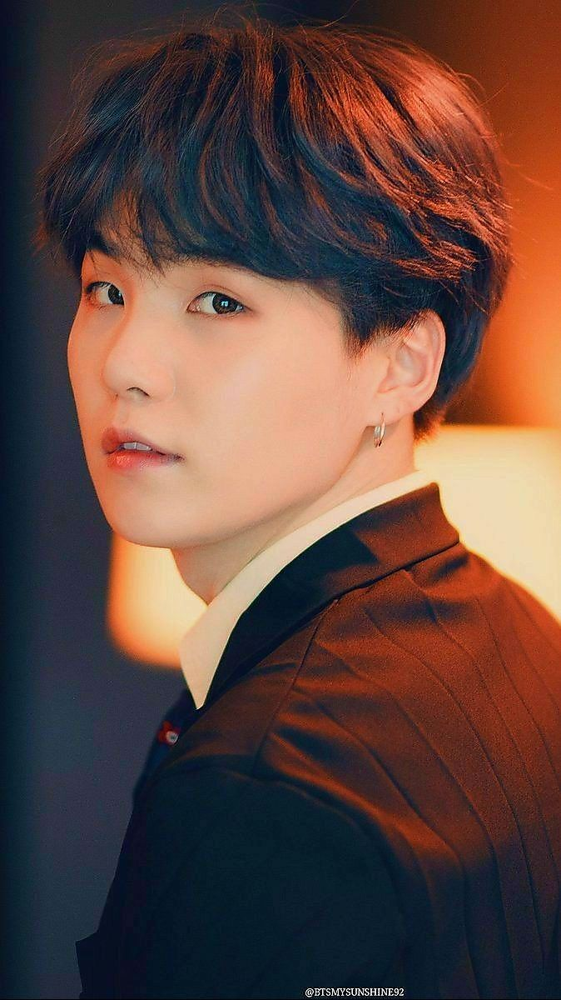
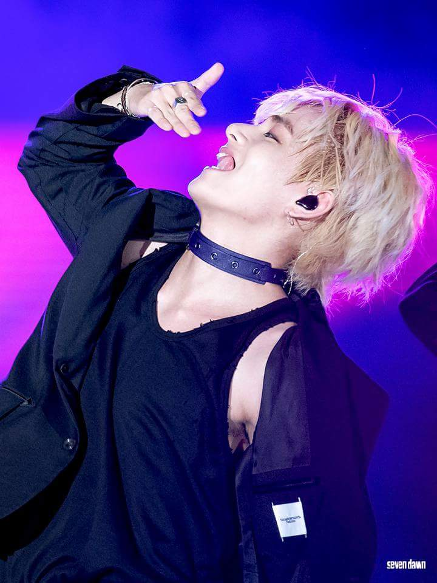
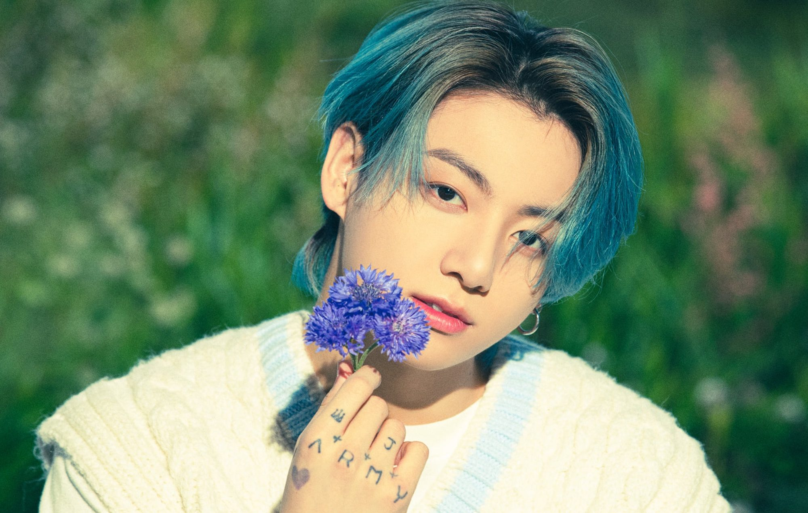
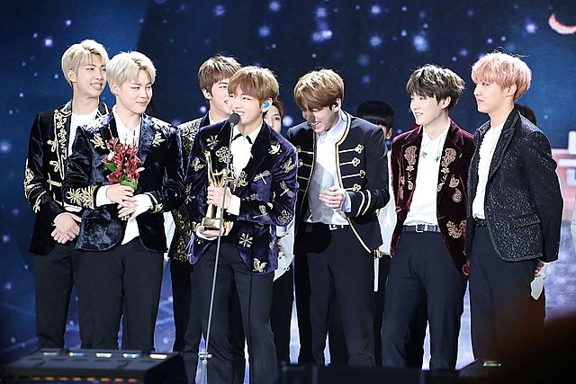

BDe afkorting BTS staat voor de Koreaanse uitdrukking 'Bangtan Sonyeondan', wat zoveel als kogelvrije jongensscouts (Bulletproof Boyscouts)
betekent. De jongens staan daarom ook wel bekend als Bangtan Boys. In juli 2017 kondigde de band aan dat ze vanaf dan ook bekend staan onder de
naam Beyond the Scene.
BTS is een zogenaamde K-popgroep. K-pop staat voor Koreaanse pop. Wie bij het genre alleen denkt aan Psy's 'Gangnam Style' of juist aan mierzoete
pop denkt, zit er naast. De muziek van de band bevat veel R&B, hiphop en EDM-invloeden. pBTS bestaat uit zeven Zuid-Koreaanse muzikanten en dansers. RM, Jin,
Suga, J-Hope, Jimin, V en Jungkook. De jongens zingen daarnaast niet alleen, maar rappen én dansen ook nog.
De band is ontstaan uit audities gehouden door Big Hit Entertainment in 2010, 2011 en 2012. Eerste muziek van BTS kwam in 2013 in de vorm van het single-album
2 Cool 4 Skool' met de debuutsingle 'No More Dream'. Al snel werd de groep een van de populairste acts in Zuid-Korea. Binnen vier jaar had de band al drie wereldtours
achter de rug, vier studioalbums (twee in het Koreaans en twee in het Japans) en vijf EP's uitgebracht. De grote doorbraak in Amerika kwam in 2017 toen de Boys de
'Billboard Music Award' voor 'Top Social Artist' won. Daarmee versloegen ze onder andere Justin Bieber, Selena Gomez, Ariana Grande en Shawn Mendes in deze fan-categorie.
Het was de eerste keer dat een K-popgroep een "Billboard Music Award' won! Inmiddels hebben ze ook de Amerikaanse hitlijsten weten door te dringen. Op dit moment staat
'FAKE LOVE' op nummer 10 in de 'Billboard Hot 100' en eerder dit jaar stond BTS op nummer 1 in de 'Billboard Artist Top 100' en de 'Billboard Album Top 100'!
| Kim Namjoon | Kim Seokjin | ||
| Min Yoongi |  | Jung Hoseok | |
| Park Jimin | Kim Taehyung |  | |
| Jeon Jungkook |  | BTS |  |